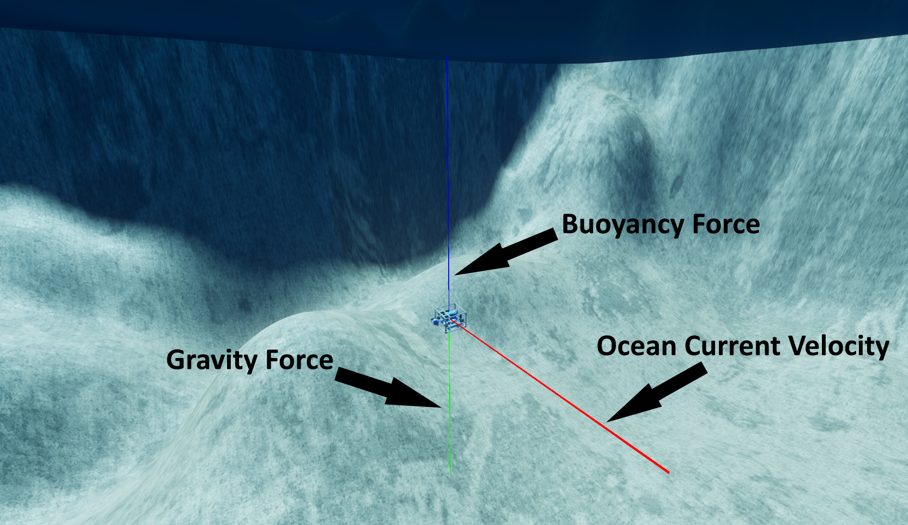
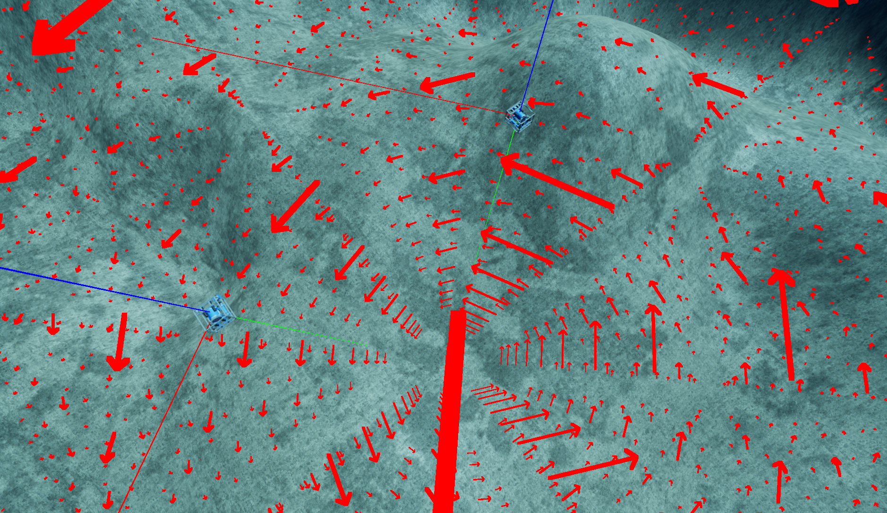

洋流控制器
HoloOcean 世界可以选择模拟真实洋流对飞行器的动态影响。这使得我们可以测试更严苛的飞行器导航，或模拟洋流可能给飞行器完成任务带来的困难。
注意
目前，当使用 Fossen Dynamics 作为载具控制器时，洋流功能无法正常工作。
配置洋流场景
洋流被定义为作用于载具的速度矢量。
注意
此洋流矢量位于全局坐标系中。
洋流始终处于激活状态，并且默认情况下，世界中所有位置的流速均为 [0, 0, 0]。可以通过在最外层添加以下内容来启用可选的调试行：
"current": {
"vehicle_debugging": True
}
启用调试线后，每个载具将生成三条调试线，分别指示重力、浮力和洋流速度，所有测量点均位于载具的质心处。下图对此进行了演示：

更改洋流
要在游戏进行中更改洋流，请从环境对象调用 set_ocean_currents() 函数，并传入要应用新洋流向量的载具名称以及该向量。
env.set_ocean_current("auv0", [1.5, 1, 0])
自定义洋流
HoloOcean 为在模拟中创建自定义洋流动力学提供了极大的自由度。如果您希望模拟与位置相关的洋流，可以通过创建一个简单的矢量场函数来实现，该函数接收位置参数并输出该位置处的矢量。然后，通过在您希望应用洋流的每个载具上添加位置传感器，您可以获取每个时间步的载具位置，将其传递给矢量场函数以获得每个位置的洋流速度，并将该速度分别应用于每个载具。以下是一个简短的示例（假设“env”是您的环境对象变量）：
def vector_field(location):
x, y, z = location
return [-x, -y, -z]
vehicles = ["auv0", "auv1", "auv2"]
while True:
tick_info = env.tick()
for vehicle in vehicles:
location = tick_info[vehicle]["LocationSensor"]
ocean_current_velocity = vector_field(location)
env.set_ocean_currents(vehicle, ocean_current_velocity)
如果您想实现随时间变化的洋流，可以创建一个新的矢量场函数，该函数以时间为参数，并输出该时刻的洋流矢量。您还可以尝试将位置信息也考虑进去，以模拟时间和位置的依赖关系。然后，遍历不同的航行器，并将该洋流应用于每个航行器。以下是一个示例：
def vector_field(time):
x = np.sin(time)
y = np.cos(time)
z = -.5
return [x, y, z]
time = 0
vehicles = ["auv0", "auv1", "auv2"]
while True:
tick_info = env.tick()
ocean_current_velocity = vector_field(time)
time += 1
for vehicle in vehicles:
env.set_ocean_currents(vehicle, ocean_current_velocity)
绘制矢量场

还有一个名为 draw_debug_vector_field 的环境命令，它可以渲染一个三维向量矩阵，以便更好地了解当前场的情况。只需确保您的函数接收一个位置向量作为输入，并输出一个当前速度向量即可。此命令的必需参数是一个用于模拟当前流的向量场函数，以及一个用于生成向量场的位置向量。其他可选参数包括生成的向量场的尺寸、向量之间的间距、向量粗细、箭头大小比例以及生成的向量场的持续时间。有关所有函数参数的更多信息，请参阅 API 文档：draw_debug_vector_field。
如果您想查看实际示例，请参阅洋流示例。